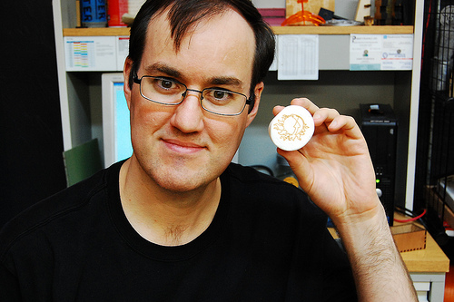

When Eric came to HeatSync for the first time in September of last year for 3D printing night, he was plagued by the type of questions that some members probably remember asking themselves: Will I fit in? Do I need to be more technically skilled? Eric said that, at the time, he had no related skills and didn.t like meeting new people. Combined with chronic shyness, the decision to actually show up at HeatSync was a big one for him, he said. But when he did work up the courage to stop by, he was greeted by Ryan Rix, who has since moved to the Bay area, and he said the overwhelmingly friendly introduction was exactly what he needed to feel comfortable.
The evidence of the power of this good introduction is overwhelming. In roughly 12 months, Eric grew from a shy newbie in electronics to heading HeatSync outreach to burgeoning hacker/maker-spaces in local libraries with the help of his fleet of Arduino-controlled, light-sensitive robots that he built. And, of course, he recently stepped up to act as Secretary on HeatSync.s board of directors.
One of the things he remembered most from his early days at the lab is how much everyone
encouraged him to participate and share with the group. If there was something cool he wanted to add to the lab, as long as it wasn't disruptive to other people or the space, he said he felt completely empowered to do it. As a consequence of this, he said he felt investment and ownership in the lab almost immediately, like he was right at home.
Unsurprisingly, one of the values that Eric said is most important to him is that people strive to .be excellent to each other.. He said he tries to replicate the warm welcome he received with those who are new to HeatSync and hopes that other members will strive for something similar. He also said he hopes that members can find ways of sharing opinions with each other without being discouraging or disrespectful. Welcoming new people can be hard, he acknowledged, because members do have to make a judgment call about the those who show up at the front door. Are they really interested in HeatSync or do they just want use the bathroom or something worse? But sometimes, he said, HeatSync might be missing opportunities for new members and in his case, he is thankful that he didn.t just stand at the window and have members avoid eye-contact with him.
As far as the future of HeatSync goes, Eric said he thinks our greatest challenge moving forward is, well, moving. If HeatSync is seriously considering finding a new, larger space, beyond whether we have the money to do so, he said he is wary of burning out volunteers in the process, which was a problem after HeatSync moved to Mesa. But HeatSync also has a lot of things going for it, and for Eric, it's encompassed in the "sync" part of our name. There are a lot of programs and communities in the Valley that intersect with HeatSync, like FIRST Robotics, Tech Shop, and library hackerspaces to name a few. Members of HeatSync have a great opportunity to reach out to those communities and use their expertise to help them collaborate and grow, he said. If fact, the points where communities and disciplines intersect are also the areas where he hopes to see HeatSync grow internally. Specifically, he said, recurring events like 3D printing and Arduino really help to draw people into the space, much like they drew him into the space. But those nights are hopefully just the beginning.
"Some of them may feel like they can.t use a laser or write code. Yes you can, it.s not actually hard," he said. "Sure things can get complicated with certain projects on a laser or with code, but you can really accomplish a lot with very little learning compared to the tools in the past. People really should take advantage of that."